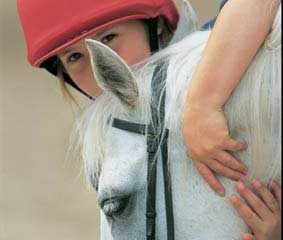

The Healthy Circle
Login Sign up
☰
Horse-riding can improve children's cognitive ability
"We wanted to look into these effects because previous studies have demonstrated the benefits of horseback riding with respect to enhancing physical health and the mental effects, but few studies have addressed the effects of horseback riding on children and the mechanisms underlying how riding affects humans" says Mitsuaki Ohta, professor of Tokyo University of Agriculture.
Ohta and his research team examined the effects of horseback riding on the performance of children by having them complete simple tests directly before and after horse-riding, while measuring the children's heart rate in response to movements created by the horses.
The behavioral reactions of the children were tested using a 'Go/No-go' test, which assesses cognitive response using fast computerized questions. The test determined the children's ability to appropriately respond in a situation, by either performing an action or demonstrating self-control. The children were also asked to complete simple arithmetic problems to test their mental performance.
The results showed that riding on some horses greatly improved the ability of the children to perform the behavioral tasks, but less of an effect was seen on the children's results when solving arithmetic problems.
Ohta believes this difference in results may be due to the simplicity of the mathematical test, as increases in heart rate were only associated with the behavioral test.
"The Go/No-go tasks might be harder than the arithmetic problems and thus cause a more extensive activation of the sympathetic nervous system, since increases in heart rate were associated with the improved performance of Go/No-go tasks, but not arithmetic problems," he explains.
These results mean that the act of horse-riding could improve cognitive abilities in children. These are brain-based skills of which an improvement can lead to enhanced learning, memory and problem-solving.
So, what is specific in the movement of horse-riding that leads to these improvements? "One important characteristic of the horse steps is that they produce three-dimensional accelerations. The movement of the horse's pelvis may provide motor and sensory inputs to the human body and in this study, I believe some of the differences among the rider's performances might be due to these accelerations" Ohta explains that results may be due to the vibrations produced from the horse's motion activating parts of the sympathetic nervous system, leading to improved behavioral test results.
While it is important to consider that the results could vary based on the horses or breeds, and that a lot of children do not have easy access to horse-riding classes, perhaps some benefits could be acquired from interactions with more attainable pet interactions.
"There are many possible effects of human-animal interactions on child development" Ohta suggests, "For instance, the ability to make considered decisions or come to sensible conclusions, which we described in this study, and the ability to appreciate and respond to complex emotional influences and non-verbal communication, which requires further research to be understood."
Story Source:
Materials provided by Frontiers. Note: Content may be edited for style and length.